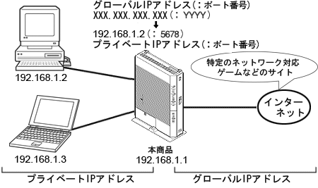

静的IPマスカレードとは、あらかじめ固定的に使用するグローバルIPアドレスおよびポート番号と、本商品のLAN側に接続された端末を結びつける機能です。
本機能により、WAN側からの特定ポ−トの通信を指定したパソコンに送信できます。
必要に応じてNAPTエントリの設定をすることで、特定のサイトから特定のパソコンへ直接アクセスできます。
特定のネットワーク対応ゲームやストリーミングなど、外部から直接アクセスが必要なアプリケーションが使用できます。 |
|  |
| 本設定と静的NATとの違いは、静的NATがIPアドレスを変換するだけでポート番号を変換しないのに対し、本設定はポート番号も同時に変換する点です。なお、本設定は静的NATの設定よりも優先して解釈されますので、ご注意ください。 |
|